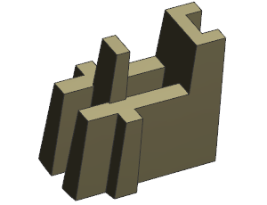
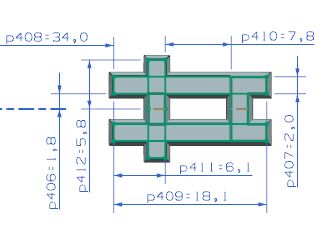
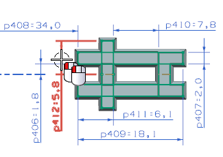
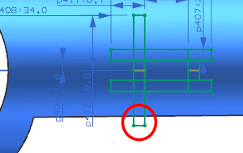
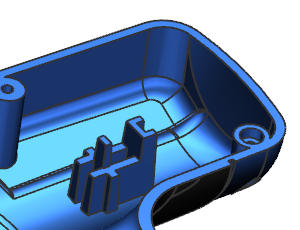
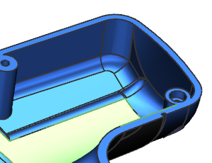
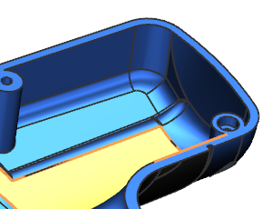
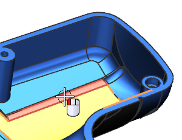
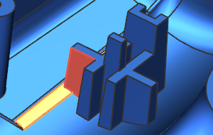

在部件导航器中，右击链接部件模块 “Heat Sink Design”并选择链接部件设为工作部件。

在链接部件模块的工作收集器中，双击“SKETCH_001”。
|
注释 |
在下图中，已隐藏了链接的面。 |

编辑表达式 p412的值，以使它从5.8变为10。

使用 Ctrl + Q 快捷键以完成草图。
NX 将更新草图，但拉伸特征尚未更新，用于修剪拉伸的面不够大，无法适应这个更改，您需要添加另一个面到主部件文件的输入收集器中。
|
注释 |
在下图中，已隐藏了链接的面。 |

在部件导航器中，右击链接部件模块 “Heat Sink Design”并选择停用部件模块。
没有实体显示在图形窗口中，因为在输出收集器中，抽取的面当前处于抑制状态。
右击链接部件模块 “Heat Sink Design”并选择主部件设为工作部件。

双击链接部件模块 “Heat Sink Design”。

在输入参考组的列表框中，选择抽取的面 (7)。
NX 将高亮显示当前的输入面。

选择如图所示的较小相邻面并点击确定。

注意到已更新链接部件模块。并且下图中高亮显示的面将穿过添加的输入面。在您解决主部件文件中的输入问题之后，在这个链接部件模块文件中，NX 将按顺序进行下列操作：
更新 WAVE 链接的输入面
取消抑制工作收集器中的拉伸特征
取消抑制被抑制的抽取输出面
更新主部件文件中的链接部件模块

如果是设计团队协作，从主部件文件更新到链接部件模块文件中的过程为：
总设计师修改主部件文件中的输入，然后保存文件。
助理设计师在链接部件模块文件中使用更新输入参考命令，并保存文件。
总设计师在主部件文件中使用更新输出参考命令以查看助理设计师进行的修改。
关闭所有部件。